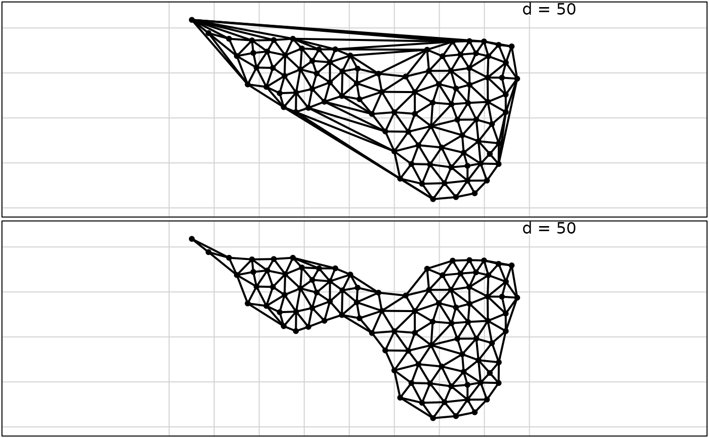
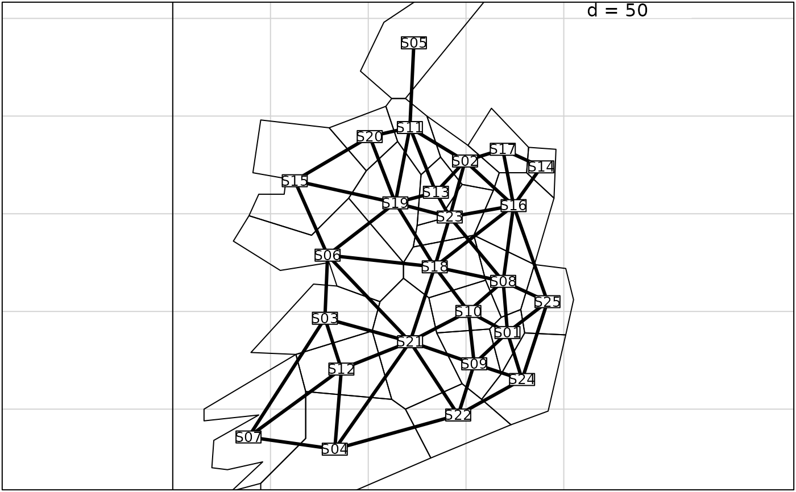
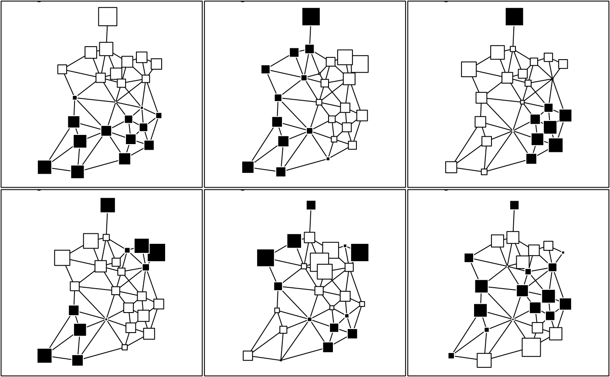
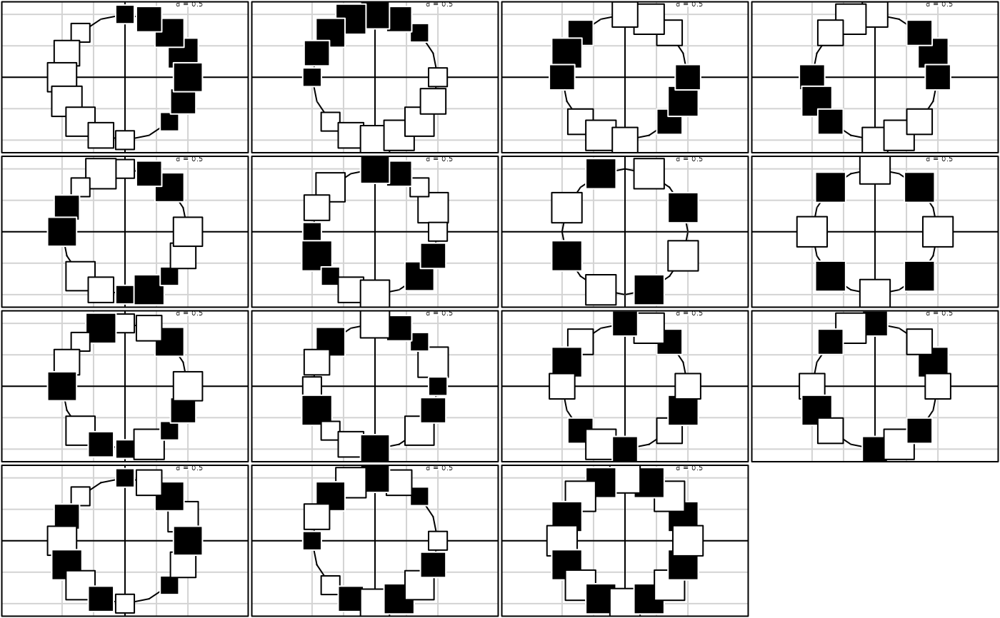
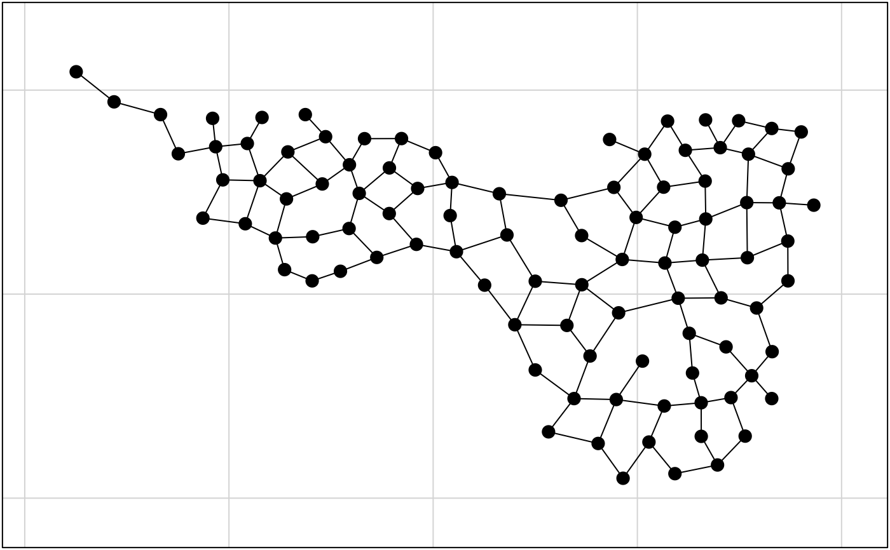
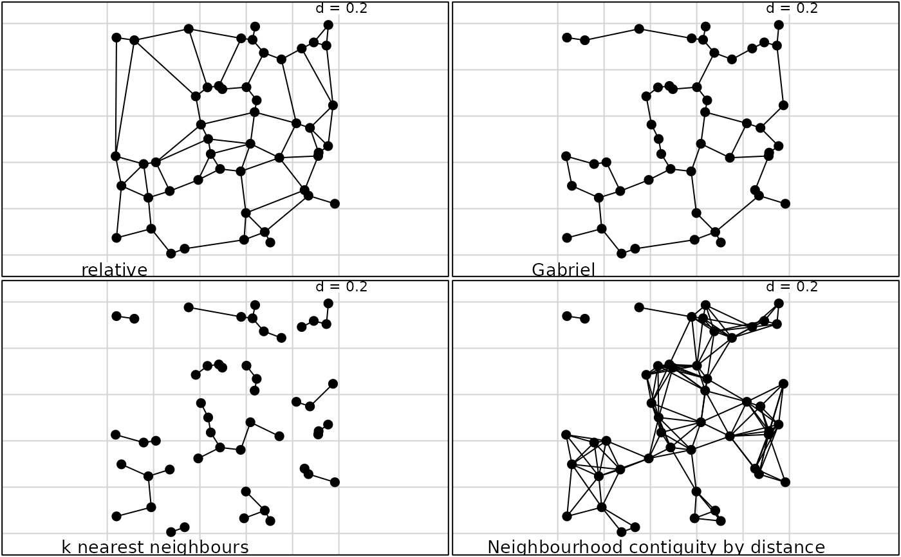
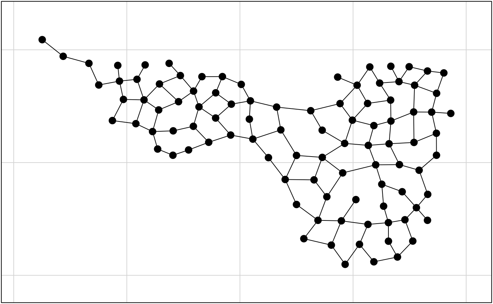
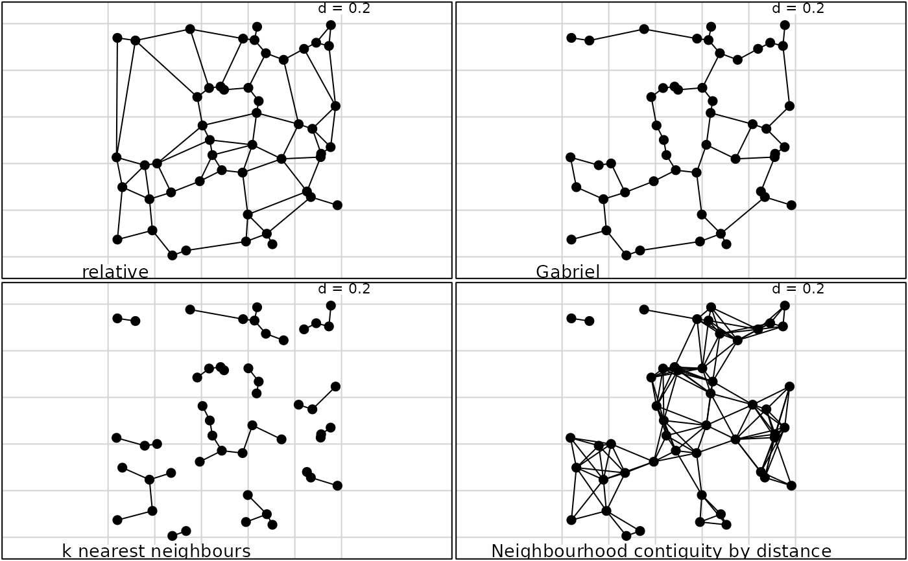

Neighbourhood Graphs
neig.Rdneig creates objects of class neig with :
a list of edges
a binary square matrix
a list of vectors of neighbours
an integer (linear and circular graphs)
a data frame of polygons (area)
scores.neig returns the eigenvectors of neighbouring,
orthonormalized scores (null average, unit variance 1/n and null covariances) of maximal autocorrelation.
nb2neig returns an object of class neig using an object of class nb in the library 'spdep'
neig2nb returns an object of class nb using an object of class neig
neig2mat returns the incidence matrix between edges (1 = neighbour ; 0 = no neighbour)
neig.util.GtoL and neig.util.LtoG are utilities.
Arguments
- list
a list which each component gives the number of neighbours
- mat01
a symmetric square matrix of 0-1 values
- edges
a matrix of 2 columns with integer values giving a list of edges
- n.line
the number of points for a linear plot
- n.circle
the number of points for a circular plot
- area
a data frame containing a polygon set (see area.plot)
- nb
an object of class 'nb'
- neig, x, obj, object
an object of class 'neig'
- ...
further arguments passed to or from other methods
References
Thioulouse, J., D. Chessel, and S. Champely. 1995. Multivariate analysis of spatial patterns: a unified approach to local and global structures. Environmental and Ecological Statistics, 2, 1--14.
Examples
if(!adegraphicsLoaded()) {
if(requireNamespace("deldir", quietly = TRUE)) {
data(mafragh)
par(mfrow = c(2, 1))
provi <- deldir::deldir(mafragh$xy)
provi.neig <- neig(edges = as.matrix(provi$delsgs[, 5:6]))
s.label(mafragh$xy, neig = provi.neig, inc = FALSE,
addax = FALSE, clab = 0, cnei = 2)
dist <- apply(provi.neig, 1, function(x)
sqrt(sum((mafragh$xy[x[1], ] - mafragh$xy[x[2], ]) ^ 2)))
#hist(dist, nclass = 50)
mafragh.neig <- neig(edges = provi.neig[dist < 50, ])
s.label(mafragh$xy, neig = mafragh.neig, inc = FALSE,
addax = FALSE, clab = 0, cnei = 2)
par(mfrow = c(1, 1))
data(irishdata)
irish.neig <- neig(area = irishdata$area)
summary(irish.neig)
print(irish.neig)
s.label(irishdata$xy, neig = irish.neig, cneig = 3,
area = irishdata$area, clab = 0.8, inc = FALSE)
irish.scores <- scores.neig(irish.neig)
par(mfrow = c(2, 3))
for(i in 1:6)
s.value(irishdata$xy, irish.scores[, i], inc = FALSE, grid = FALSE, addax = FALSE,
neig = irish.neig, csi = 2, cleg = 0, sub = paste("Eigenvector ",i), csub = 2)
par(mfrow = c(1, 1))
a.neig <- neig(n.circle = 16)
a.scores <- scores.neig(a.neig)
xy <- cbind.data.frame(cos((1:16) * pi / 8), sin((1:16) * pi / 8))
par(mfrow = c(4, 4))
for(i in 1:15)
s.value(xy, a.scores[, i], neig = a.neig, csi = 3, cleg = 0)
par(mfrow = c(1, 1))
a.neig <- neig(n.line = 28)
a.scores <- scores.neig(a.neig)
par(mfrow = c(7, 4))
par(mar = c(1.1, 2.1, 0.1, 0.1))
for(i in 1:27)
barplot(a.scores[, i], col = grey(0.8))
par(mfrow = c(1, 1))
}
if(requireNamespace("spdep", quietly = TRUE)) {
data(mafragh)
maf.rel <- spdep::relativeneigh(as.matrix(mafragh$xy))
maf.rel <- spdep::graph2nb(maf.rel)
s.label(mafragh$xy, neig = neig(list = maf.rel), inc = FALSE,
clab = 0, addax = FALSE, cne = 1, cpo = 2)
par(mfrow = c(2, 2))
w <- matrix(runif(100), 50, 2)
x.gab <- spdep::gabrielneigh(w)
x.gab <- spdep::graph2nb(x.gab)
s.label(data.frame(w), neig = neig(list = x.gab), inc = FALSE,
clab = 0, addax = FALSE, cne = 1, cpo = 2, sub = "relative")
x.rel <- spdep::relativeneigh(w)
x.rel <- spdep::graph2nb(x.rel)
s.label(data.frame(w), neig = neig(list = x.rel), inc = FALSE,
clab = 0, addax = FALSE, cne = 1, cpo = 2, sub = "Gabriel")
k1 <- spdep::knn2nb(spdep::knearneigh(w))
s.label(data.frame(w), neig = neig(list = k1), inc = FALSE,
clab = 0, addax = FALSE, cne = 1, cpo = 2, sub = "k nearest neighbours")
all.linked <- max(unlist(spdep::nbdists(k1, w)))
z <- spdep::dnearneigh(w, 0, all.linked)
s.label(data.frame(w), neig = neig(list = z), inc = FALSE, clab = 0,
addax = FALSE, cne = 1, cpo = 2, sub = "Neighbourhood contiguity by distance")
par(mfrow = c(1, 1))
}
}

#> Neigbourhood undirected graph
#> Vertices: 25
#> Degrees: 5 5 4 4 1 5 3 6 5 5 5 4 4 2 3 7 3 7 7 3 8 4 6 4 4
#> Edges (pairs of vertices): 57
#> S01 .
#> S02 ..
#> S03 ...
#> S04 ....
#> S05 .....
#> S06 ..1...
#> S07 ..11...
#> S08 1.......
#> S09 1........
#> S10 1......11.
#> S11 .1..1......
#> S12 ..11..1.....
#> S13 .1........1..
#> S14 ..............
#> S15 .....1.........
#> S16 .1.....1.....1..
#> S17 .1...........1.1.
#> S18 .....1.1.1.....1..
#> S19 .....1....1.1.1..1.
#> S20 ..........1...1...1.
#> S21 ..11.1..11.1.....1...
#> S22 ...1....1...........1.
#> S23 .1.....1....1..1.11....
#> S24 1.......1............1..
#> S25 1......1.......1.......1.



 


